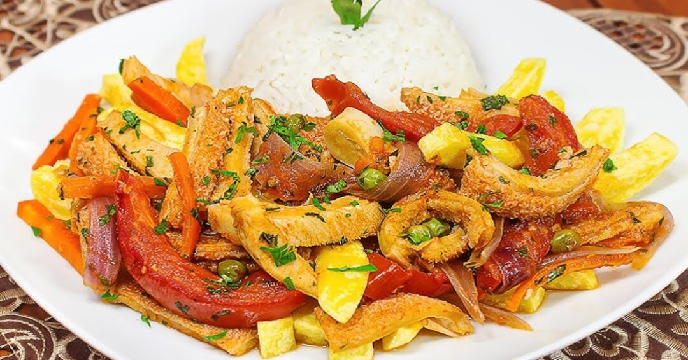
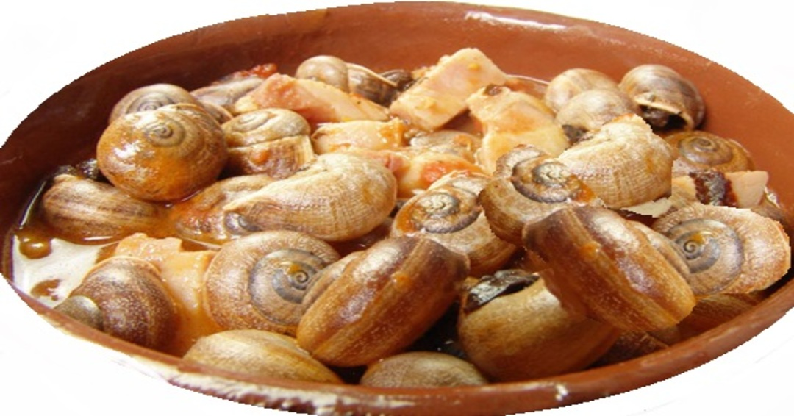
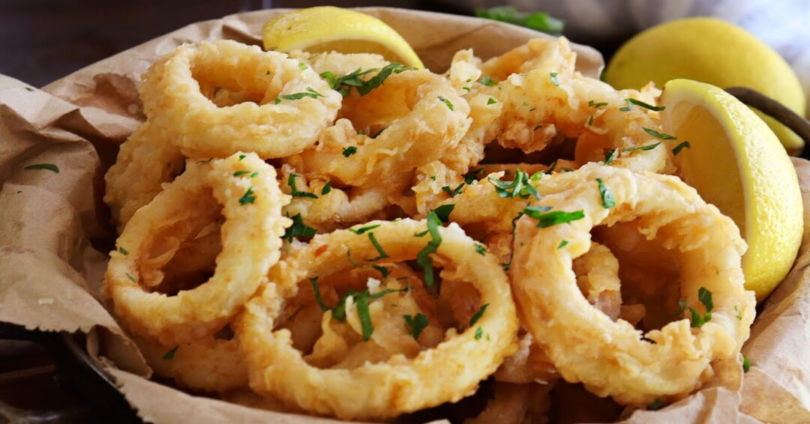
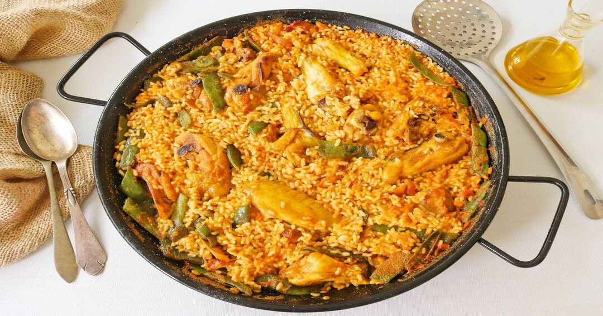
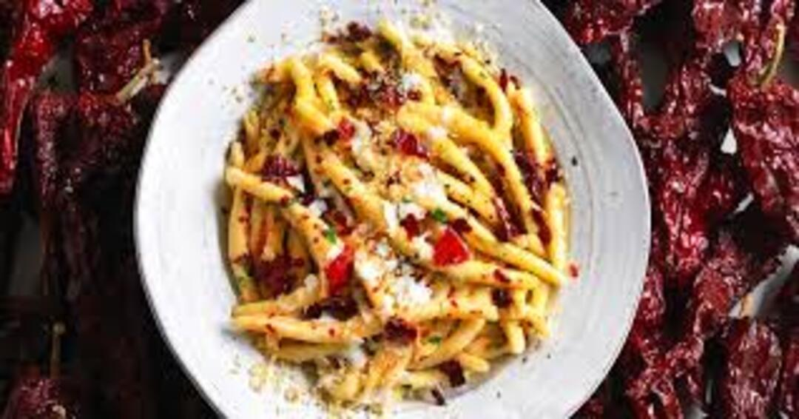
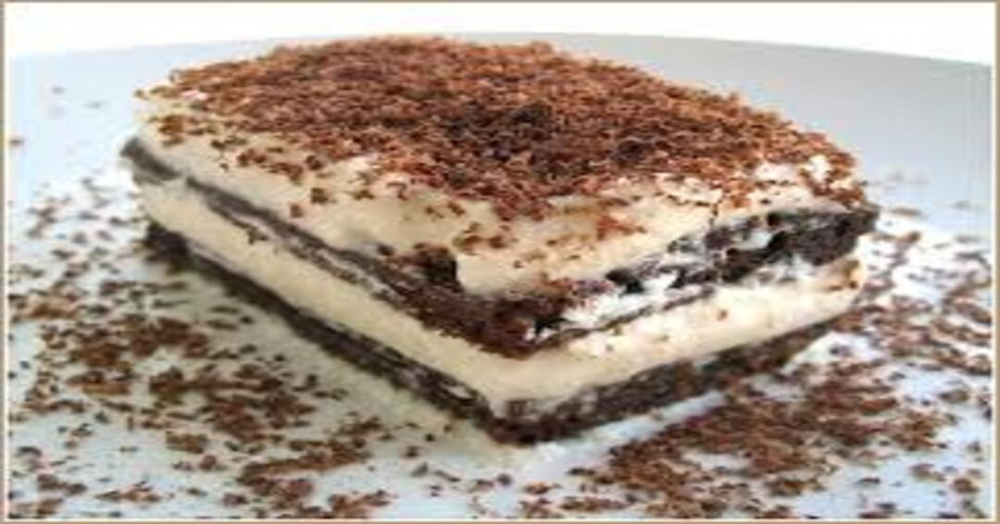
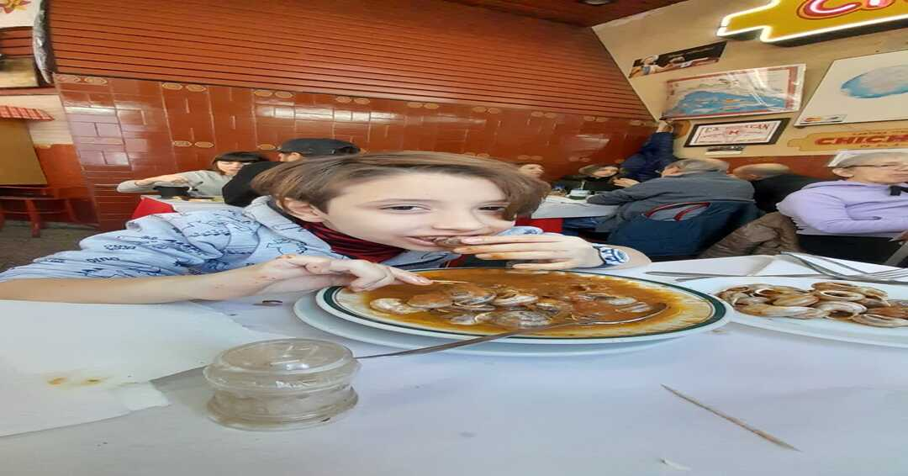
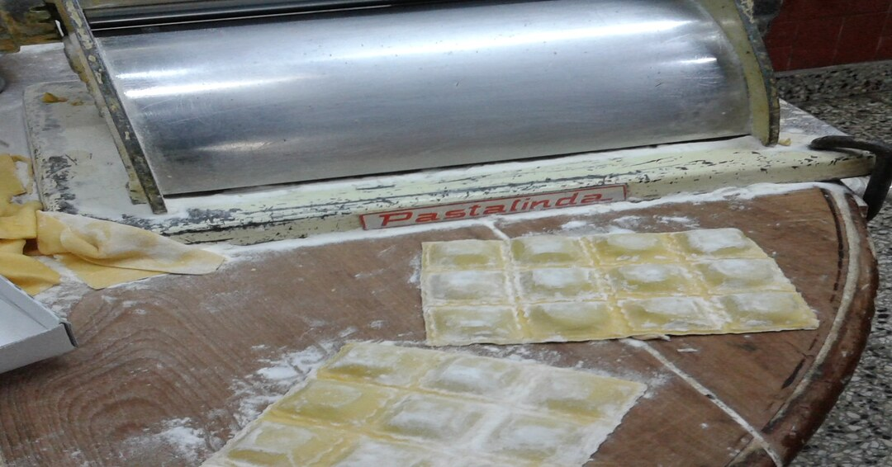
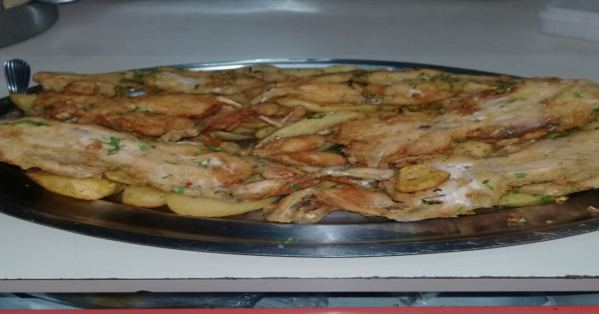

Platos Especiales

Mondongo a la Italiana
Un clásico de nuestra cocina, la receta más pedida desde 1956.

Caracoles a la Bordaleza
Caracoles criados en Pinamar, preparados con tradición.

Rabas a la Calabria
Calamares frescos, crujientes, acompañados con limón.

Paella
La auténtica paella de Chichilo, con mariscos seleccionados.

Fusiles al Ferretto
Pasta casera amasada en la cantina, servida con brócolis y anchoas.

Tiramisú Calabrés
Postre de la casa, receta especial de la familia.
Nuestra Historia
Cantina Chichilo de Buenos Aires abrió sus puertas en 1956 en el barrio de La Paternal. Desde entonces, ha sido atendida por sus dueños, manteniendo viva la tradición italiana en cada plato.
Fue elegida por Pol-Ka Producciones para rodajes como "Ilusiones", "El Sodero de mi Vida" y "Mujeres Asesinas". Además, fue el lugar preferido de Diego Maradona.
Galeria

Cliente disfrutando caracoles

Sorrentinos caseros
